PHỚT DẦU CỦA BỘ VI SAI SAU > THAY THẾ |
| 1. THÁO CỤM TRỤC CÁC ĐĂNG SAU |
Tháo trục các đăng (Xem trang Kích chuột vào đây).
| 2. THÁO ĐAI ỐC HÃM BÁNH RĂNG QUẢ DỨA |
| 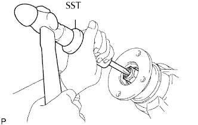 |
Dùng SST và búa, mở khoá hãm của đai ốc.
| 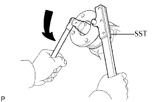 |
Dùng SST giữ bích nối, tháo đai ốc.
| 3. THÁO MẶT BÍCH NỐI CỦA BÁNH RĂNG QUẢ DỨA |
| 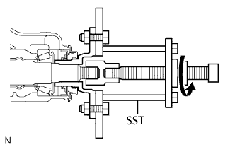 |
Dùng SST, tháo bích nối.
| 4. THÁO PHỚT DẦU BỘ VI SAI SAU |
| 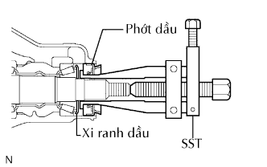 |
Dùng SST, tháo phớt dầu.
| 5. THÁO BỘ VĂNG DẦU BÁNH RĂNG QUẢ DỨA VI SAI SAU |
| 6. THÁO VÒNG BI ĐŨA CÔN PHÍA TRƯỚC BÁNH RĂNG QUẢ DỨA |
| 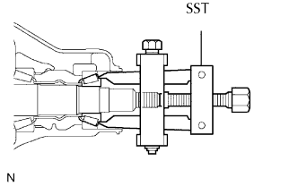 |
Dùng SST, tháo vòng bi đũa (bên trong).
| 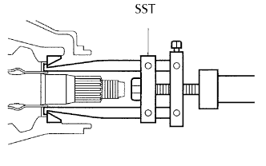 |
Dùng SST, tháo vòng bi đũa (bên ngoài).
| 7. THÁO VÒNG CHỨA DẦU VI SAI |
Dùng một tô vít và một búa, đóng vành chứa dầu.
| 8. THÁO BẠC CÁCH VÒNG BI BÁNH RĂNG QUẢ DỨA VI SAI SAU |
| 9. LẮP BẠC CÁCH VÒNG BI BÁNH RĂNG QUẢ DỨA VI SAI SAU |
| 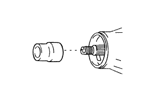 |
Lắp bạc cách vòng bi mới.
| 10. LẮP VÒNG CHỨA DẦU VI SAI |
Dùng thanh đồng và búa, đóng vành chứa dầu mới.
| 11. LẮP VÒNG BI ĐŨA CÔN PHÍA TRƯỚC BÁNH RĂNG QUẢ DỨA |
| 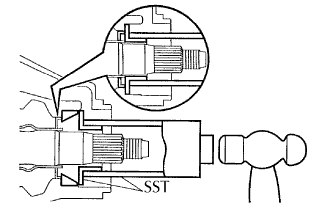 |
Dùng SST và một búa, đóng ổ bi đũa (bên ngoài) vào.
Lắp vòng bi đũa (bên trong).
| 12. LẮP BỘ VĂNG DẦU BÁNH RĂNG QUẢ DỨA VI SAI SAU |
| 13. LẮP PHỚT DẦU CỤM VI SAI SAU |
| 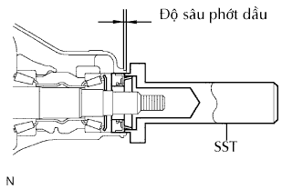 |
Bôi mỡ MP lên lợi của phớt dầu mới.
Dùng SST và một búa, đóng phớt chắn dầu vào.
| 14. LẮP MẶT BÍCH NỐI CỦA BÁNH RĂNG QUẢ DỨA |
| 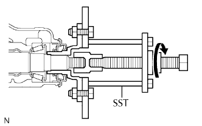 |
Dùng SST, lắp bích nối.
| 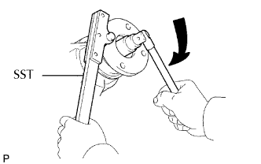 |
Dùng SST giữ bích nối, lắp đai ốc mới.
| 15. KIỂM TRA TẢI TRỌNG BAN ĐẦU CỦA BÁNH RĂNG QUẢ DỨA VI SAI |
| 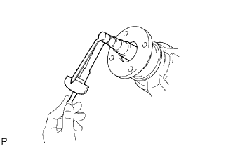 |
Dùng cân lực, đo tải trọng ban đầu.
| Hạng mục | Điều kiện tiêu chuẩn |
| Vòng bi mới | 1.37 đến 2.06 N*m (14 đến 21 kgf*cm, 12.1 đến 18.2 in.*lbf) |
| Vòng bi cũ | 0.59 đến 0.98 N*m (6 đến 10 kgf*cm, 5.2 đến 8.7 in.*lbf) |
| 16. KIỂM TRA TỔNG TẢI TRONG BAN ĐẦU |
 |
Dùng cờlê cân lực, đo tải trọng ban đầu với răng của bánh răng quả dứa và bánh răng vành chậu đang tiếp xúc.
| 17. HÃM ĐAI ỐC BÁNH RĂNG QUẢ DỨA PHÍA SAU |
| 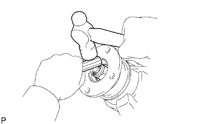 |
Dùng một đục và búa, khoá hãm đai ốc.
| 18. LẮP CỤM TRỤC CÁC ĐĂNG SAU |
Lắp trục cácđăng (Xem trang Kích chuột vào đây).
| 19. NẠP LẠI DẦU VI SAI |
| 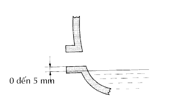 |
Dừng xe trên mặt phẳng
Tháo nút đổ dầu và gioăng.
Kiểm tra rằng mức dầu cách mép dưới của miệng nút đổ dầu từ 0 đến 5 mm (0 đến 0.20 in.).
| Nhiệt độ | Độ nhớt |
| Trên -18°C (0°F): | SAE 90 |
| Dưới -18°C (0°F) | SAE 80W hay 80W - 90 |
Kiểm tra rò rỉ dầu khi mức dầu là thấp.
Lắp nút đổ dầu vi sai bằng một gioăng mới.
| 20. KIỂM TRA RÒ RỈ DẦU VI SAI |
Dừng xe trên mặt phẳng
Tháo nút đổ dầu và gioăng.
Kiểm tra rằng mức dầu cách mép dưới của miệng nút đổ dầu từ 0 đến 5 mm (0 đến 0.20 in.).
| Nhiệt độ | Độ nhớt |
| Trên -18°C (0°F): | SAE 90 |
| Dưới -18°C (0°F) | SAE 80W hay 80W - 90 |
Kiểm tra rò rỉ dầu khi mức dầu là thấp.
Lắp nút đổ dầu vi sai bằng một gioăng mới.